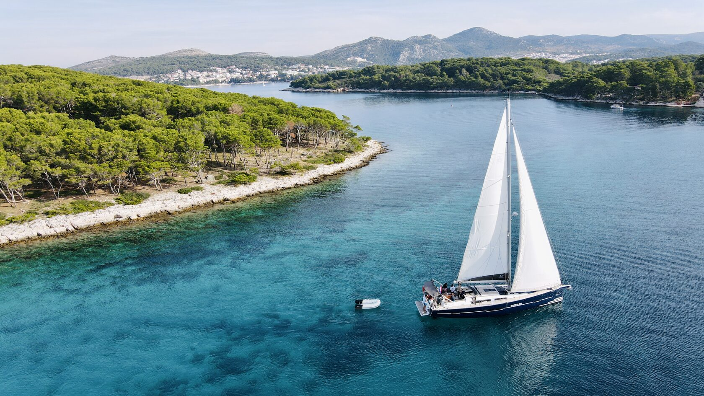
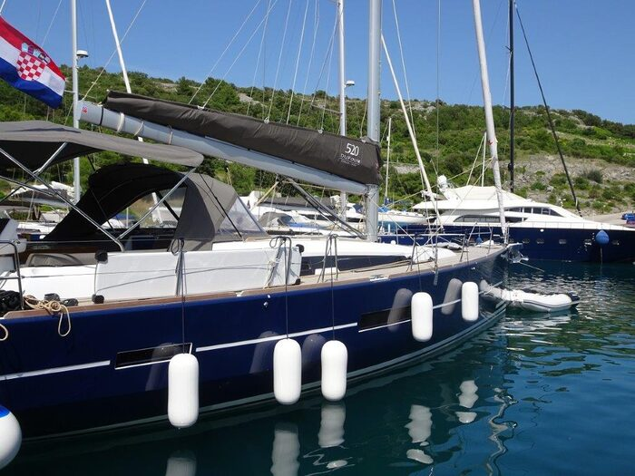
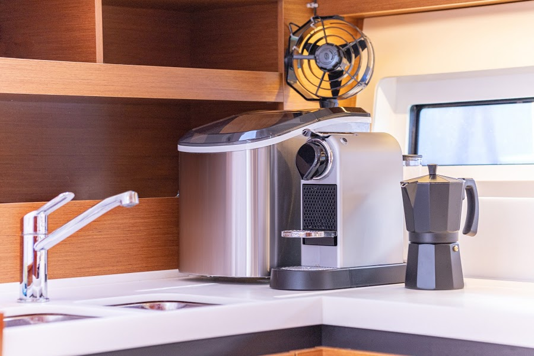
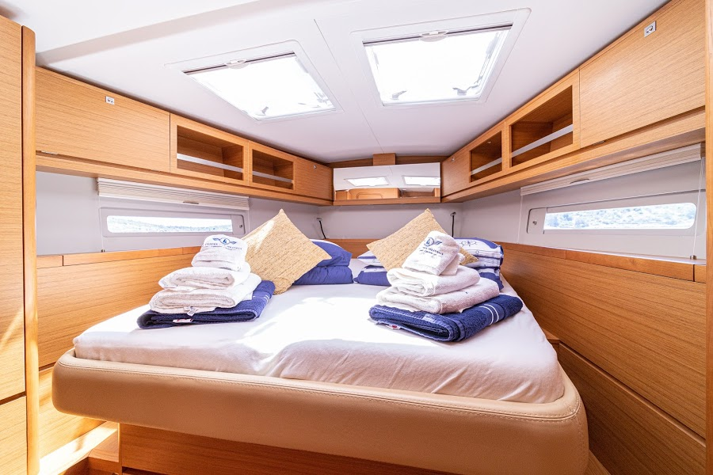
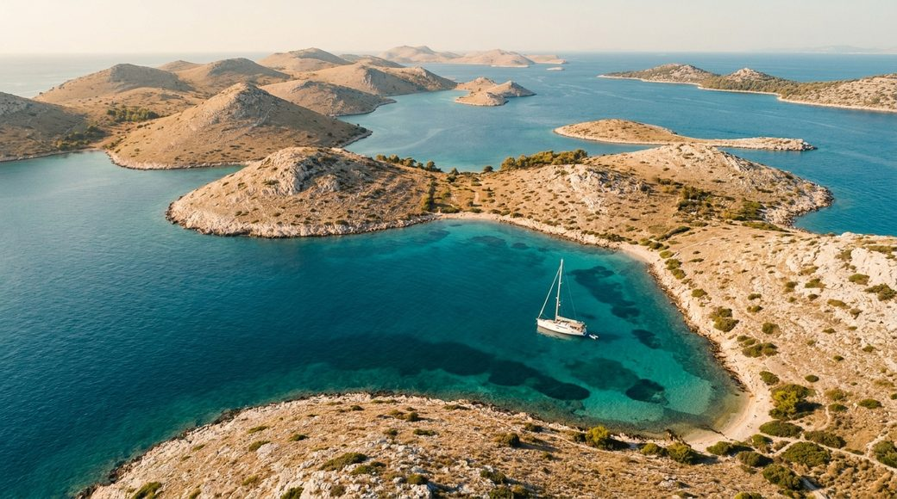
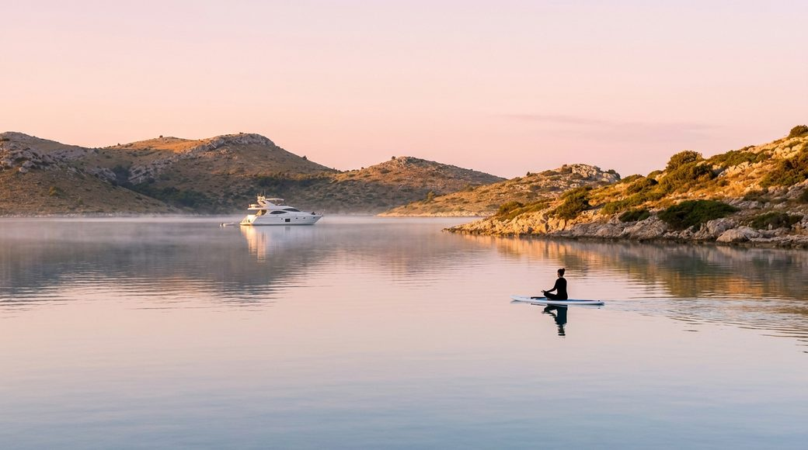
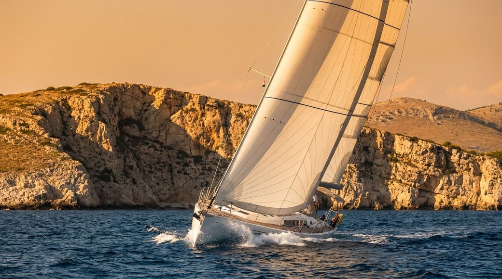
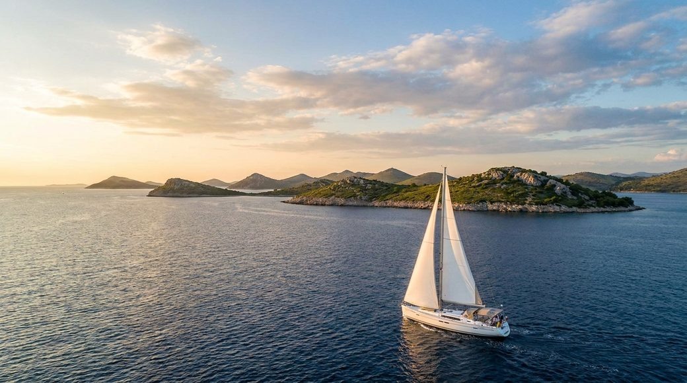
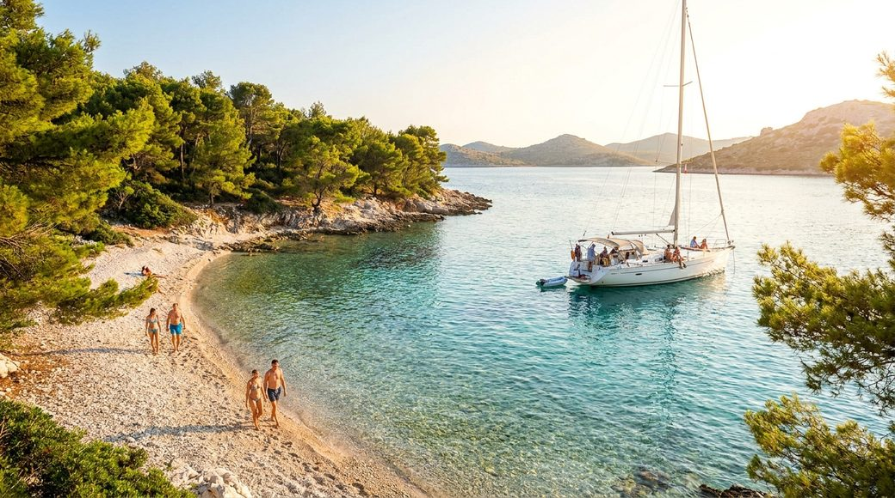

Групова яхтенна подорож узбережжям Хорватії. Виходимо з Marina Kremik під Сплітом, ідемо островами Далмації, і двічі на день тренуємось — на палубі, на дошці SUP і на березі. Тренер Apollo поруч, капітан веде яхту, маршрут підлаштовуємо під вітер.

Фото: Under the HeavensГості Apollo Next люблять рух і люблять компанію. Ми з'єднали дві речі: справжню подорож під вітрилами Адріатикою — і структуру тренувань, до якої звикли в клубі. Це не «фітнес замість відпочинку». Це відпочинок, від якого тіло стає сильнішим, а голова — порожнішою (у хорошому сенсі).
Ранок — м'яка активація на світанку, поки море дзеркальне. Удень — перехід під вітрилами та купання. Надвечір — головне тренування на березі чи палубі й розтяжка на заході сонця.
6–8 гостей, тренер і капітан. За тиждень незнайомці стають командою. Це формат, у якому люди повертаються — не за милями, а за людьми поруч.
Кожне заняття має ціль: сила, кардіо, мобільність, відновлення. Той самий науковий підхід, що й у клубі — просто килимок лежить на палубі, а замість дзеркала перед тобою море.
Дух формату — у маленькій морській команді: спільні переходи, вечері на борту, ранкові брифінги й правило «маршрут попередній — погода вирішує». Структура двох занять на день спирається на світову логіку yoga & sailing ретритів Хорватії: ранкова практика → перехід → вечірній тренувальний блок, SUP і купання між ними. Зміст тренувань — наш власний, із форматів Apollo Next.
Два тренувальні блоки на день із морем, їжею та сном поміж ними. Час орієнтовний — у вересні–жовтні світловий день коротшає, тож головну практику ставимо ближче до заходу сонця.
Йога / SUP-йога / мобільність на світанку, поки штиль. Перед сніданком — пробудження тіла, дихання, легке купання.
Сніданок на палубі, брифінг капітана. Виходимо до наступної бухти — найчастіше під денний бриз «мистраль».
Купання зі стоянки, SUP, сноркелінг, обід, відпочинок, сонце. За бажанням — відкрита вода й запливи.
Функціонал / HIIT / сила / танці на березі чи палубі. Закінчуємо розтяжкою та диханням на заході сонця.
Спільна вечеря, історії дня, плани на завтра. Тиха якірна стоянка, зорі, сон під плескіт води.
Ходимо на вітрильних монокорпусних яхтах 46–52 фути від партнера Under the Heavens (база — Marina Kremik, Primošten). Просторий кокпіт для практик, каюти на двох, прісна вода, сонячні панелі та Wi-Fi на борту.

52 фути · флагман3+1 каюти (owner's layout), великий кокпіт, 700 л води + сонячні панелі, Wi-Fi. Найкомфортніший для невеликої групи з простором під практики.

49 футів · родинна4 каюти (family layout), легка в керуванні, 600 л води + сонячні панелі, Wi-Fi. Місткіша конфігурація для повної групи.

46 футів4 каюти, великий кокпіт, проста й надійна. Гарний баланс місткості та ходових якостей для тижневих маршрутів.
«Оксамитовий» кінець сезону в центральній Далмації: море ще тепле, натовпів уже немає, світло м'яке й фотогенічне. Натомість погода мінливіша, ніж улітку — тому маршрут гнучкий, а останнє слово завжди за капітаном.
Повітря вдень. Уночі 14–17°C — варто взяти теплий шар.
Море. Комфортне для купання весь жовтень.
Світловий день. Захід ~18:45 (кін. вер.) → ~18:00 (кін. жовт.).
Найспокійніша вода — на світанку. Ідеально для SUP-йоги та запливів.
М'який термічний бриз, що піднімається пополудні. Наш робочий вітер для переходів. До жовтня слабшає — частіше йдемо під мотором уранці.
Сильний холодний вітер із гір, восени частішає. Чистить небо, але може «замкнути» день. Сховок — Жирє (Ступіца), Првіч, захищені бухти.
Несе хмари, дощ і хвилю. Дає нестабільні відрізки (у жовтні ~12 дощових днів). Сховок — марини й Скрадін угору річкою Крка.
Жодного спецзаліза під замовлення — лише наявний інвентар Apollo, який легко вкладається у борт, плюс водне спорядження від яхти. Із цього набору тренер збирає будь-яке з 17 форматів клубу.
*За потреби. Компактно, повторюваний набір — той самий, що в аутдор-зонах Apollo.
SUP — основа «водних» практик: від спокійної SUP-йоги до спринтів на дошці.
Marina Kremik стоїть якраз посередині однієї з найбагатших акваторій Адріатики: на північ — Шибенський архіпелаг, річка Крка й Корнати; на південь — Рогозниця, Шолта, Дрвеник, Трогір, Брач і Віс. Короткі переходи, десятки захищених бухт.
П'ять різних характерів подорожі — від спокійного відновлення до експедиції на південь. Усі стартують і фінішують у Marina Kremik, усі — 6 ночей, по два тренування на день. Перемикай вкладки.
Класика акваторії й наш головний маршрут: Шибенський архіпелаг, водоспади Крки й нацпарк Корнати. Короткі захищені переходи, мінімальний ризик за погодою, повний набір форматів — сила, кардіо, мобільність, вода. Якщо береш один маршрут уперше — бери цей.

Корнати · Крка Архіпелаг, водоспади, тишаПосадка, брифінг із капітаном, вихід. Знайомство з SUP і купання в бухті «коралового острова».
Розтяжка + дихання на палубі під захід сонця. Тихий вечір на буї.
YOGA на палубі в дзеркальній річковій затоці.
Захід у нацпарк Крка, прогулянка до водоспадів Скрадінскі бук (стежки-помости).
Functional на набережній + відновлення МФР.
SUP-йога у спокійній воді, потім перехід під вітрилами.
Береговий Circuit + інтервальні запливи. Розтяжка на заході.
Мобільність + купання, далі трекінг до фортеці Градіна — види на архіпелаг.
Сила (Progress) з гирями/гантелями на березі. Дихання, зорі.
YOGA на палубі, вхід у нацпарк Корнати.
Підйом на хребет Леврнаки + купання на піщаній Лоєні. Розтяжка.
SUP + відкрита вода, заплив уздовж берега.
Функціонал + підсумкове коло групи. Прощальний захід сонця.
YOGA на сході сонця, сніданок, повернення на базу й висадка.
Маршрут-перезавантаження. Багато SUP-йоги, стретчингу, пілатесу, МФР, дихання й медитацій; повільний темп, найбільше часу на березі та найкоротші переходи. Працюємо з парасимпатикою — знижуємо кортизол, відновлюємо сон. Для тих, хто приходить «видихнути».

SUP-йога · Крка Тиша, дихання, відновленняПосадка, м'яке SUP-знайомство у захищеній бухті тихого села.
Yin-йога + дихання на палубі.
YOGA на сході сонця у річковій тиші.
Нацпарк Крка: повільна прогулянка-«ліс-терапія» вздовж води.
Відновлювальна йога + МФР.
SUP-йога у дзеркальній воді.
Pilates + купання. Медитація на заході.
М'яка мобільність + плавання.
Stretching + дихання, спостереження за зорями.
YOGA, перехід у мальовничу бухту Лавса.
Yin + купання. Медитація на заході сонця.
SUP-йога, перехід.
М'яка мобільність + прогулянка до солоного озера «Зміїне око». Підсумкове коло.
YOGA на сході, сніданок, висадка.
Для тих, хто приїхав пахати. Високоінтенсивні берегові WOD, спринти на SUP, інтервальні запливи, забіги сходами фортець і хребтами. Більше навантаження, більше поту, більше адреналіну — і та сама розтяжка на заході, щоб відновитись. Рух на південь до Шолти й Трогіра.

Шолта · Трогір WOD, спринти, забігиПосадка, короткий перехід. Береговий WOD (Planet X) на розгін тижня.
Розтяжка й мобілізація після інтенсиву.
Functional на палубі, потім довший перехід під вітрилами.
Tae-bo з лапами + спринт-запливи. МФР.
Інтервальні спринти на SUP у бірюзовій лагуні.
Circuit на пляжі + сноркелінг. Розтяжка.
Iron Man HIIT + забіги сходами фортеці Камерленго, місто UNESCO.
Сила з гирями. Дихання на заході.
Functional + запливи.
Planet X HIIT. Розтяжка на заході.
Забіг трейлом на пагорб над бухтою.
Circuit + підсумкове коло. Захід сонця.
SUP + холодний заплив, сніданок, висадка.
Найамбітніший маршрут — на південь, до Шолти, Пакленських островів, Віса й Брача. Довші переходи, відкрита вода, драматичні бухти-каньйони, сноркелінг і відчуття справжньої експедиції. Менше «залізних» занять, більше моря й досліджень. Сильно залежить від погоди — капітан веде під стабільне вікно.

Віс · Пакленські Каньйони-бухти, відкрите мореПосадка, перехід. SUP + купання, перевірка спорядження.
Functional на березі + розтяжка.
Мобільність, довгий перехід під вітрилами.
Береговий функціонал + сноркелінг біля палацу-марини. Розтяжка.
SUP-йога, перехід до соснових Пакленських островів.
Circuit на пляжі + сноркелінг. Дихання на заході.
YOGA, перехід до найдальшого острова. Рибальська Коміжа.
Похід до бухти-каньйону Стініва (100-метрові скелі) + купання.
Купання + SUP, далі перехід.
Сила у захищеній гавані Мілни. Розтяжка.
Functional, перехід-повернення з купанням.
Підсумкове коло + розтяжка на заході.
YOGA на сході, сніданок, висадка.
Найлегший і найтепліший маршрут: пари, друзі, змішані рівні. Короткі переходи, більше міст і людей, танці (Zumba, DanceX), ігри на пляжі, SUP-розваги, спільні вечері. Тренування є щодня, але м'якші — головне тут атмосфера й спільнота. Шибенський архіпелаг і Крка.

Зларін · Першт Танці, ігри, тепла компаніяПосадка, SUP-розваги й купання на «кораловому острові».
Легкий DanceX на палубі — розігрів настрою.
Сімейна йога на палубі.
Водоспади Крки — прогулянка, фото, спільний обід.
Легкий функціонал + ігри на воді. Розтяжка.
SUP-йога для всіх.
Zumba на пляжі + купання. Дихання на заході.
Мобільність + плавання.
Circuit-lite + сноркелінг. Вечір у родинній конобі.
SUP + перехід.
ABT / BodyTone + прогулянка до озера «Зміїне око». Розтяжка.
YOGA, старе місто Примоштен і пляж.
Функціонал + прощальна вечірка. Захід сонця.
Легка розтяжка на сході, сніданок, висадка.
Навігація, безпека, погода й вибір стоянок. Веде яхту, ставить на якір, проводить ранкові брифінги. Останнє слово щодо маршруту — завжди за ним.
Лідер аутдор-подій клубу. Складає й проводить два заняття на день, адаптує навантаження під групу, веде SUP-йогу й відповідає за безпеку у воді та енергію спільноти.
Камбуз і збалансоване меню під тренування. За потреби — здорове харчування від екосистеми Fozzy Group (Silpo). Турбота про побут, щоб група думала лише про море й рух.
Яхта 46–52 фути з капітаном · 6 ночей у каютах на двох · два тренування на день із тренером Apollo · інвентар для занять · SUP-дошки й маски · постіль і рушники · маршрутне планування й підтримка партнера.
Окремо: переліт до Спліта, трансфер, харчування/провізія, нацпаркові збори (Корнати, Крка), особиста страховка.
Рятувальні жилети й страхувальні лінії · інструктаж із безпеки у воді перед першим заняттям · навантаження масштабується під рівень · аптечка на борту · постійний зв'язок і Wi-Fi · прогноз і план «Б» на кожен день. Заняття у воді — лише з дозволу капітана й за погодою.
Яхта — це 4 каюти для пар (по 2 місця) плюс службова каюта капітана і стюардеси. Каюта бронюється парою. Обери маршрут, тиждень і каюту — розрахунок оновлюється наживо.
Обери одну з чотирьох гостьових кают. Кожна — 2 місця, бронюється парою.
Вартість тижня — це місця гостей і команда (капітан + стюардеса). Місце коштує €1 500 з особи. Каюта — це завжди пара, тож базово каюта = 2 × €1 500 = €3 000.
Команда працює на всю яхту, тож її вартість ділиться порівну між чотирма каютами. Капітан — €2 500 ÷ 4 = €625 на каюту. Стюардеса — €1 500 ÷ 4 = €375. Разом команда додає €1 000 до каюти — по €500 на особу.
Підсумок: €2 000 з особи · €4 000 за каюту. Повна яхта (4 каюти, 8 гостей) = €16 000, із яких €4 000 — команда.
| Місце гостя · 1 особа | €1 500 |
| Каюта · 2 місця (пара) | €3 000 |
| Капітан · €2 500 ÷ 4 каюти | + €625 |
| Стюардеса · €1 500 ÷ 4 каюти | + €375 |
| Разом за каюту · на особу €2 000 | €4 000 |
Концептуальний розрахунок. Точна сума на гостя залежить від моделі яхти та дати.
Заповни поля — і натисни «Відправити заявку». Ми зберемо групу під обраний маршрут і тиждень.